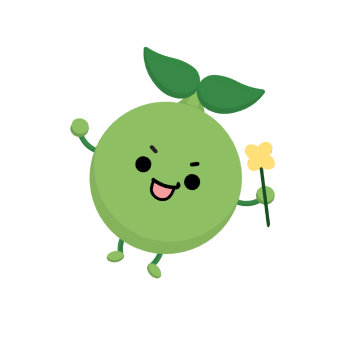

플마

갓생으로 살기 위해 노력이
강박과 스트레스 유발로 이어져 힘드신가요?
플마는 스트레스 줄여주는 습관 형성 서비스입니다.
이 서비스를 통해 좋은 습관은 플러스 나쁜 습관은 마이너스
한다는 의미에서 착안되었습니다.
강박과 스트레스 유발로 이어져 힘드신가요?
플마는 스트레스 줄여주는 습관 형성 서비스입니다.
이 서비스를 통해 좋은 습관은 플러스 나쁜 습관은 마이너스
한다는 의미에서 착안되었습니다.


Plant
Plan
Mindcare